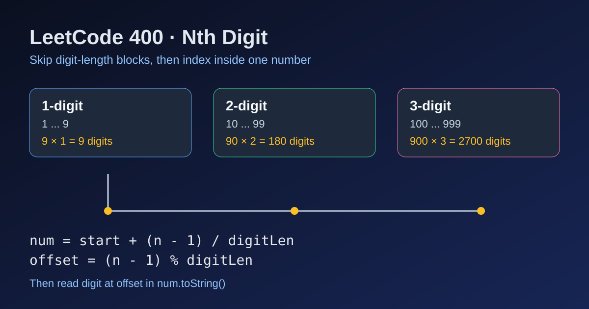

LeetCode 400: Nth Digit (Digit-Length Grouping + Arithmetic Indexing)
LeetCode 400MathNumber TheoryToday we solve LeetCode 400 - Nth Digit.
Source: https://leetcode.com/problems/nth-digit/

English
Problem Summary
Given an integer n, return the n-th digit in the infinite sequence 12345678910111213....
Key Insight
Numbers are naturally grouped by digit length:
- 1-digit numbers: 1..9 → 9 × 1 digits
- 2-digit numbers: 10..99 → 90 × 2 digits
- 3-digit numbers: 100..999 → 900 × 3 digits
We first skip whole groups, then pinpoint the exact number and digit position inside that number.
Algorithm
- Let digitLen = 1, count = 9, start = 1.
- While n > digitLen × count, subtract that block and move to next block:
n -= digitLen × count, digitLen++, count *= 10, start *= 10.
- In the target block, locate number index: index = (n - 1) / digitLen.
- Target number is num = start + index.
- Target digit index in num: offset = (n - 1) % digitLen.
- Convert num to string and return the digit at offset.
Complexity Analysis
Time: O(log n) (at most 9-10 digit-length groups).
Space: O(1) extra (excluding string conversion).
Common Pitfalls
- Using 32-bit integer for digitLen × count may overflow; use long/long long.
- Off-by-one mistakes around n - 1 when computing index and offset.
- Forgetting to update all three variables (digitLen, count, start) together.
Reference Implementations (Java / Go / C++ / Python / JavaScript)
class Solution {
public int findNthDigit(int n) {
long digitLen = 1;
long count = 9;
long start = 1;
while (n > digitLen * count) {
n -= digitLen * count;
digitLen++;
count *= 10;
start *= 10;
}
long num = start + (n - 1) / digitLen;
int offset = (int) ((n - 1) % digitLen);
return Long.toString(num).charAt(offset) - '0';
}
}func findNthDigit(n int) int {
digitLen, count, start := int64(1), int64(9), int64(1)
nn := int64(n)
for nn > digitLen*count {
nn -= digitLen * count
digitLen++
count *= 10
start *= 10
}
num := start + (nn-1)/digitLen
offset := (nn - 1) % digitLen
s := strconv.FormatInt(num, 10)
return int(s[offset] - '0')
}class Solution {
public:
int findNthDigit(int n) {
long long digitLen = 1, count = 9, start = 1;
long long nn = n;
while (nn > digitLen * count) {
nn -= digitLen * count;
digitLen++;
count *= 10;
start *= 10;
}
long long num = start + (nn - 1) / digitLen;
int offset = (nn - 1) % digitLen;
string s = to_string(num);
return s[offset] - '0';
}
};class Solution:
def findNthDigit(self, n: int) -> int:
digit_len, count, start = 1, 9, 1
while n > digit_len * count:
n -= digit_len * count
digit_len += 1
count *= 10
start *= 10
num = start + (n - 1) // digit_len
offset = (n - 1) % digit_len
return int(str(num)[offset])var findNthDigit = function(n) {
let digitLen = 1n;
let count = 9n;
let start = 1n;
let nn = BigInt(n);
while (nn > digitLen * count) {
nn -= digitLen * count;
digitLen++;
count *= 10n;
start *= 10n;
}
const num = start + (nn - 1n) / digitLen;
const offset = Number((nn - 1n) % digitLen);
return Number(num.toString()[offset]);
};中文
题目概述
给你一个整数 n，请返回无限序列 12345678910111213... 中的第 n 位数字。
核心思路
按“位数分组”处理：
- 1 位数（1~9）共有 9 × 1 位
- 2 位数（10~99）共有 90 × 2 位
- 3 位数（100~999）共有 900 × 3 位
先整组跳过，再在目标分组里定位“第几个数 + 数字内第几位”。
算法步骤
- 初始化 digitLen = 1、count = 9、start = 1。
- 当 n > digitLen × count 时，说明目标不在当前组：
执行 n -= digitLen × count，然后进入下一组（位数+1、数量×10、起始值×10）。
- 组内下标：index = (n - 1) / digitLen。
- 目标数字：num = start + index。
- 数字内偏移：offset = (n - 1) % digitLen。
- 转成字符串后取 offset 位置字符并转成整数。
复杂度分析
时间复杂度：O(log n)（只会跨越有限个分组）。
空间复杂度：O(1)（不计字符串转换）。
常见陷阱
- digitLen × count 可能溢出，建议使用长整型。
- n - 1 的边界容易写错，导致 off-by-one。
- 跳组时漏更新 start 或 count。
多语言参考实现（Java / Go / C++ / Python / JavaScript）
class Solution {
public int findNthDigit(int n) {
long digitLen = 1;
long count = 9;
long start = 1;
while (n > digitLen * count) {
n -= digitLen * count;
digitLen++;
count *= 10;
start *= 10;
}
long num = start + (n - 1) / digitLen;
int offset = (int) ((n - 1) % digitLen);
return Long.toString(num).charAt(offset) - '0';
}
}func findNthDigit(n int) int {
digitLen, count, start := int64(1), int64(9), int64(1)
nn := int64(n)
for nn > digitLen*count {
nn -= digitLen * count
digitLen++
count *= 10
start *= 10
}
num := start + (nn-1)/digitLen
offset := (nn - 1) % digitLen
s := strconv.FormatInt(num, 10)
return int(s[offset] - '0')
}class Solution {
public:
int findNthDigit(int n) {
long long digitLen = 1, count = 9, start = 1;
long long nn = n;
while (nn > digitLen * count) {
nn -= digitLen * count;
digitLen++;
count *= 10;
start *= 10;
}
long long num = start + (nn - 1) / digitLen;
int offset = (nn - 1) % digitLen;
string s = to_string(num);
return s[offset] - '0';
}
};class Solution:
def findNthDigit(self, n: int) -> int:
digit_len, count, start = 1, 9, 1
while n > digit_len * count:
n -= digit_len * count
digit_len += 1
count *= 10
start *= 10
num = start + (n - 1) // digit_len
offset = (n - 1) % digit_len
return int(str(num)[offset])var findNthDigit = function(n) {
let digitLen = 1n;
let count = 9n;
let start = 1n;
let nn = BigInt(n);
while (nn > digitLen * count) {
nn -= digitLen * count;
digitLen++;
count *= 10n;
start *= 10n;
}
const num = start + (nn - 1n) / digitLen;
const offset = Number((nn - 1n) % digitLen);
return Number(num.toString()[offset]);
};
Comments